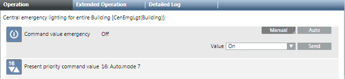
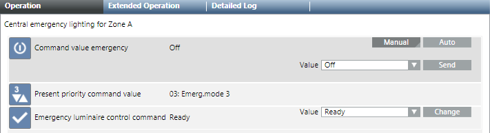
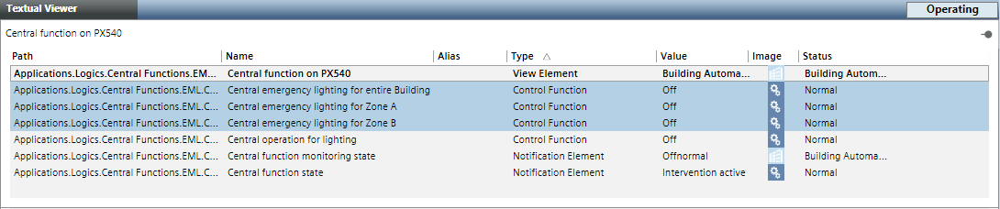
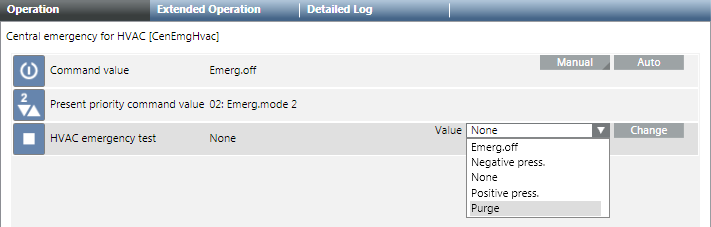
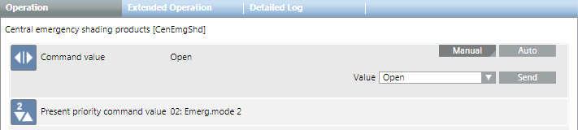

Fire Department Emergency Functions
Fire department emergency functions can also be used for maintenance and service work. No information is transmitted to the fire department when running these functions.
Emergency lighting can be manually switched on for an entire building. Emergency lighting can be executed for only one zone or multiple zones, if the entire building need not be switched on.

NOTE:
Emergency functions are generally automatically switched via a binary contact from the fire detection system. You can switch using a fire service switch, or manually through a BACnet management platform. The procedure is described here.
Operation through the management platform is only possible as long as neither the fire service switch nor the fire detection system is active.
Prerequisites:
- The system browser is in Operating mode.
- In System Browser, Management View is selected.
Emergency lighting
Switching on Emergency Lighting for the Entire Building
- Select Applications > Logics > Central Functions > [Hierarchy name] > [Hierarchy 1-n] > [Central function for Emergency Lighting] > [Emergency lighting building (CenEmgLgt Building)].
- In the Operation tab, select the Command Emergency Value property.
a. Click Manual.
b. In the Value drop-down list, select an option On.
c. Click Send.

- The message
Manual successfulis displayed.
Switching back to Automatic Mode
Emergency lighting must be switched back to automatic mode after an emergency.
- Select Applications > Logics > Central Functions > [Hierarchy name] > [Hierarchy 1-n] > [Emergency Lighting (CenEmgLgt)].
- In the Operation tab, select the Command Emergency Value property.
a. Click Auto.
- The message
Auto successfulis displayed.
Switching on Emergency Lighting for One Zone
- Select Applications > Logics > Central Functions > [Hierarchy name] > [Hierarchy 1-n] > [Central Functions for Emergency Lighting] > [Central Function Emergency Lighting for Zone A (CenEmgLgt ZoneA)].
- In the Operation tab, select the Command Emergency Value property.
a. Click Manual.
b. In the Value drop-down list, select an option On.
c. Click Send.
- The message
Manual successfulis displayed.
Switching back to Automatic Mode
Emergency lighting must be switched back to automatic mode after an emergency.
- Select Applications > Logics > Central Functions > [Hierarchy name] > [Hierarchy 1-n] > [Central Functions for Emergency Lighting] > [Central Function Emergency Lighting for Zone A (CenEmgLgt ZoneA)].
- In the Operation tab, select the Command Emergency Value property.
a. Click Auto.
- The message
Auto successfulis displayed.
Switching on All Emergency Lighting in Multiple Zones

- Select Applications > Logics > Central Functions > [Hierarchy name] > [Hierarchy 1-n] > [Central Functions for Emergency Lighting].
- The associated lighting objects are displayed in the Text Viewer.
- Click the Type column.
- The list is sorted by type.
- Highlight, using the CTRL key, all zones with type Control Function to be switched on.
NOTE: In the Operation tab, only properties that are the same as the selected object display. - In the Operation tab, select the Command Emergency Value property.
a. Click Manual.
b. In the Value drop-down list, select an option On.
c. Click Send.
- The message
Manual successfulis displayed.
Switching back to Automatic Mode
Emergency lighting must be switched back to automatic mode after an emergency.
- Select Applications > Logics > Central Functions > [Hierarchy name] > [Hierarchy 1-n] > [Central Functions for Emergency Lighting].
- The associated lighting objects are displayed in the Text Viewer.
- Click the Type column.
- The list is sorted by type.
- Highlight, using the CTRL key, all zones with type Control Function to be switched on.
NOTE: In the Operation tab, only properties that are the same as the selected object display. - In the Operation tab, select the Command Emergency Value property.
a. Click Auto.
- The message
Auto successfulis displayed.
Overriding Emergency Lighting Rest Operating Mode
Overrides the active power outage state and switches off emergency lighting. Can only be run for active power failure state. The function relieves batteries if the situation is safe.
- Select Applications > Logics > Central Functions > [Hierarchy name] > [Hierarchy 1-n] > [Central Functions for Emergency Lighting] > [Central Function Emergency Lighting for Zone A (CenEmgLgt ZoneA)].
NOTE: The function can also be executed with multiple zones in the Text Viewer. - In the Operation tab, select the Emergency Lighting Control Command property.
a. Click Manual.
b. In the Value drop-down list, select option Go to rest mode.
c. Click Change.
- The message
Change successfulis displayed.
Air
Controlling Ventilation
During an emergency, the fire department can control ventilation using the following operating modes:
- Auto
- Emergency shutdown (lock)
- Purge (supply air, extract air fan on, dampers, and VAV dampers open
- Positive press
- Negative press
- Select Applications > Logics > Central Functions > [Hierarchy Name] > HVAC [Category] > [Emergency ventilation (CenEmgHvac)].
- In the Operation tab, select the Command value property.
a. Click Manual.
b. In the Value drop-down list, select an option:
− None
− Emergency shutdown
− Purge
− Negative pressure
− Positive pressure
c. Click Change.
- The message
Command successfulappears.
NOTE:
An emergency command is executed at priority 2 or 3.
Blinds
Raising Blinds
The fire department can manually raise blinds during an emergency.
- Select Applications > Logics > Central Functions > [Hierarchy Name] > Blinds [Category] > [Emergency blinds control (CenEmgShd)].
- In the Operation tab, select the Command value property.
a. Click Manual.
b. In the Value drop-down list, select option Open.
c. Click Send.
- The message
Command successfulappears.